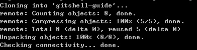
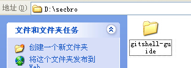
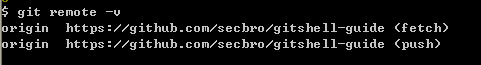

1.clone命令
1) 下载gitshell之后，在本地任意目录创建一个文件夹.我在d盘下新建了secbro文件夹
2) 运行gitshell,利用如下命令切换到目标文件夹
cd d:/secbro
3) 运行命令，从Github下载项目到目标文件夹
git clone /path/to/repository
git clone https://github.com/secbro/gitshell-guide
运行结果：
项目被复制到目标文件夹
2.remote命令
1) 运行 git remote
git remote
git remote -v

注意：
git remote -v命令在git下运行结果如上图，但在gitshell下与git remote运行结果相同
git remote add originSec https://github.com/secbro/gitshell-guide
originSec可以换成任意你想要的名字，默认为origin
3.add命令
在使用add命令之前，你需要了解git工作流
你的本地仓库由 git 维护的三棵“树”组成。第一个是你的 工作目录，它持有实际文件；第二个是 暂存区（Index），它像个缓存区域，临时保存你的改动；最后是 HEAD，它指向你最后一次提交的结果。

添加工作目录下的所有文件到暂存区（Index）
git add .
添加指定文件到暂存区（Index）
git add git-shell-guide.html